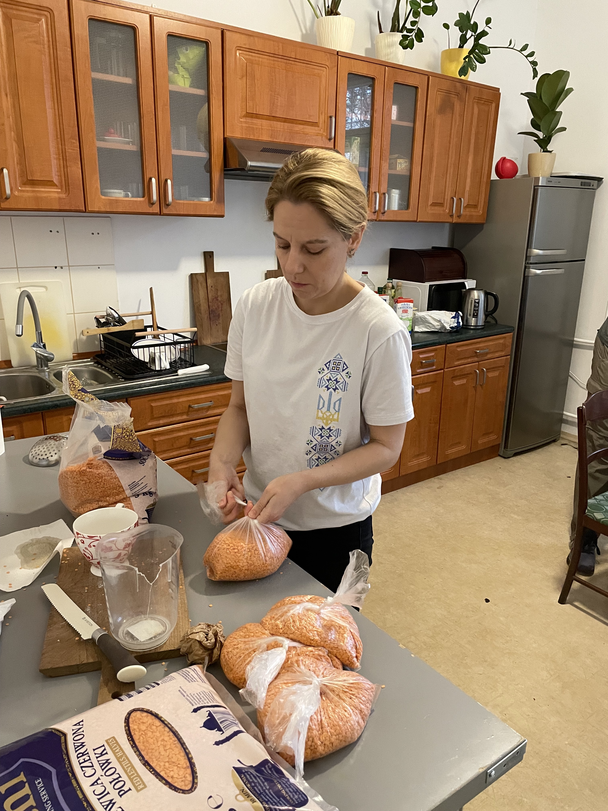
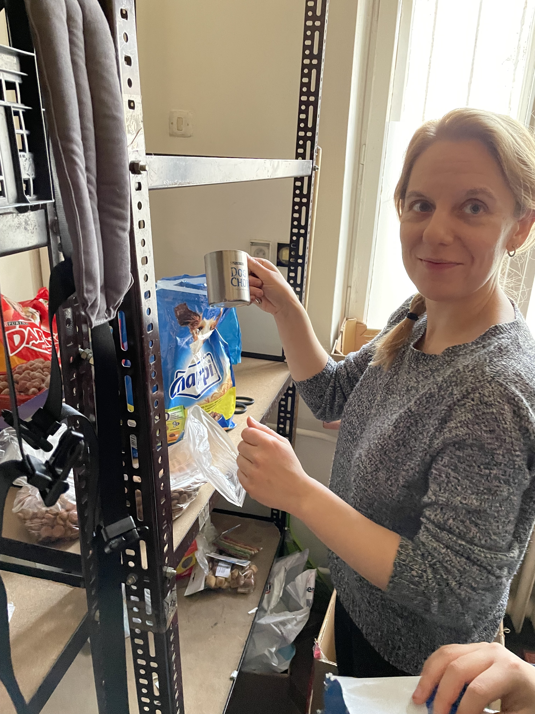
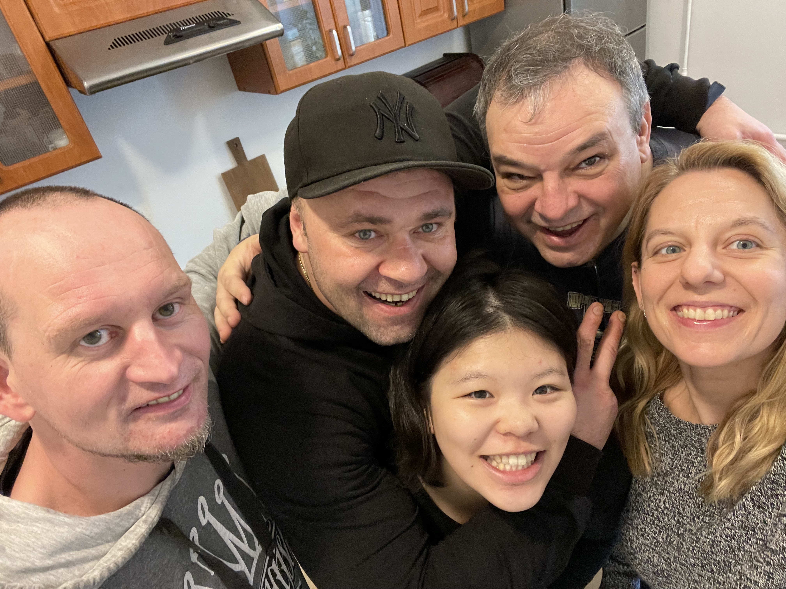

Fig.1 - Zupa dlia Ukrainy, Krakow 2023.

Fig.2 - Dasha working at the Zupa dlia Ukrainy, Krakow 2023.

Fig.3 - Unloading cat food for displaced pets, Krakow 2023.
Fig.4 - Dasha and Yuki (from Sapporo) unloading a truck with vegetables for the Soup of Ukraine NGO, Krakow 2023.

Fig.5 - with Dasha, Severin, Lucas, and Yuki (from Sapporo) working at the Soup of Ukraine NGO, Krakow 2023.